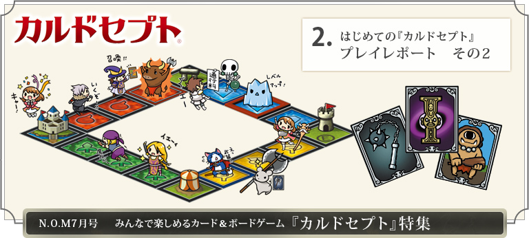
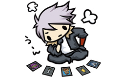
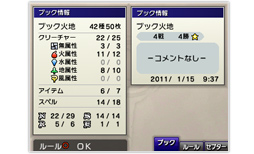
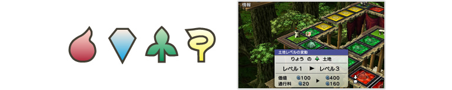
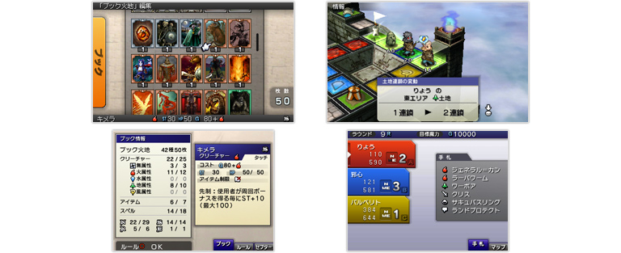
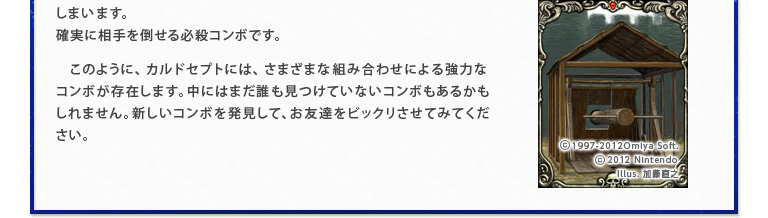
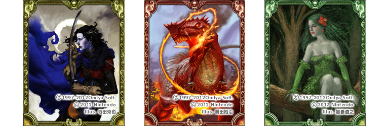
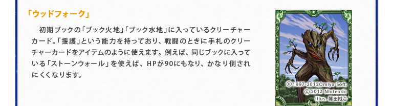
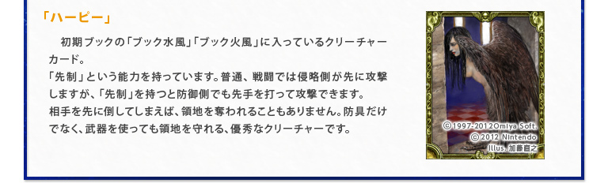

マップ内では、全所持カードの中から50枚を選んだ「ブック」から、1ターンごとにランダムでカードを1枚ずつ引いていきます。そしてストーリーモードでは、ひとつのマップをクリアーすると、そのたびに新しいカードを数枚入手できます。したがって、その中により強くて使いたいカードがあったら、次のマップをはじめる前に「ブック」に入れておく必要があります。

ただし、単純に強い「クリーチャー」のカードだけを「ブック」にたくさん入れれば有利になる、というわけではありません。「クリーチャー」と「アイテム」と「スペル」のカードをそれぞれ何枚にするのか。これは全体の戦略やプレイスタイルに大きく影響を与える要素になります。
最初はどんな「ブック」にすればいいか見当がつかないかもしれませんが、筆者はゲーム内のアドバイスにならって、「ブック」の約半分を「クリーチャー」のカードにしていました。そうするとバランスよくカードを使えて、比較的さまざまな状況の変化に対応しやすいようです。

もちろん、これが常に正解というわけではありません。プレイを進めて所持カードの種類が増え、『カルドセプト』に慣れてきたら、もっと極端な戦略をとることも可能です。『カルドセプト』には、いつでも必ず通用する万能の戦略はありません。対戦相手の戦略やそのときの状況によって、最善の戦略は変わるのです。
ちなみに、マップ内で「ブック」から引いて、手札として保持できるカードは最大6枚まで。7枚を超えると、手札の中のどれか1枚を捨てなければなりません。強いカードはとっておきたいものですが、あまり出し惜しみをすると強いカードばかり手札に残り、使わないまま捨てるはめになります。

どのカードを「ブック」に入れるのか、そして手札をいつどこで使うのか。全体の戦略を練ることと、戦略に基づいて状況に応じた戦術を考えること。この2つを意識すると「ブック」の編集はより楽しくなってきます。『カルドセプト』の可能性は、プレイするほどにどんどん広がっていくのです。
『カルドセプト』の「クリーチャー」には、色分けされた「属性」があります（主に「火」「水」「地」「風」の4種類）。またマップ上のマス目も「属性」によって色分けされています。この「属性」は「クリーチャー」がマス目を占領したときに大きな意味を持ちます。
このマス目の「属性」と占領した「クリーチャー」の「属性」が同じだと、「クリーチャー」のHPが飛躍的にアップするのです。魔力を使って領地をレベルアップすると、この効果はさらに上がります。
「属性」をそろえることと、領地のレベルアップは、戦略の中でも最も重要な要素になります。「属性」がそろって高レベルになった領地では、バトルに負けにくくなり、ほかのプレイヤーが止まったときに奪える通行料も飛躍的にアップするからです。
「属性」をそろえることと、領地のレベルアップは、戦略の中でも最も重要な要素になります。「属性」がそろって高レベルになった領地では、バトルに負けにくくなり、ほかのプレイヤーが止まったときに奪える通行料も飛躍的にアップするからです。

例えば、あらかじめブック内に「火」の「クリーチャー」を多めに入れておき、マップ内の「火」のマス目を優先的に占領・レベルアップする戦略が考えられます。マップ内で同一の「属性」の領地を複数そろえると、「連鎖」の効果によって領地の価値や通行料も上がるので、ますます効率はよくなります。

最大レベルまでアップした領地は非常に強力なので、ゲーム終盤で相当な差がついていても、ほかのプレイヤーがそこに止まってくれれば逆転できる可能性が出てきます。「スペル」カードの中にはサイコロの目を操作できるカードもあるので、それと組み合わせて無理やりライバルを高レベル領地に止まらせる、といったこともできるのです。
逆に、ライバルが高レベル領地を複数持っている場合は、手札の中に「クリーチャー」の攻撃力をアップする「アイテム」カードを残しておくなど、万一のために回避する手段を用意する必要が出てきます。もし高レベル領地を奪えれば、相手にとっては大損害になるので、ピンチが一気にチャンスになることもあります。
逆に、ライバルが高レベル領地を複数持っている場合は、手札の中に「クリーチャー」の攻撃力をアップする「アイテム」カードを残しておくなど、万一のために回避する手段を用意する必要が出てきます。もし高レベル領地を奪えれば、相手にとっては大損害になるので、ピンチが一気にチャンスになることもあります。
このように、『カルドセプト』に慣れてくると、お互いに相手の戦略を予想したり、その裏をかいたりといった局面が生まれてきます。思いがけないドラマティックな展開で勝てたときの爽快感は、たまらないものがあります。
1997-2012Omiya Soft.(c)2012 Nintendo Illus. 仲井さとし")

『カルドセプト』の魅力は、シンプルでありながら多彩な戦略を可能にするゲームシステムだけではありません。カードのイラストや、ゲーム内の音楽にも、たくさんのこだわりがこめられています。
全部で400枚を超えるカードのイラストには、加藤直之さん、開田裕治さん、寺田克也さんをはじめ、SFやファンタジーの分野でビッグネームなイラストレーターのみなさんが総勢10名以上も参加されています。
全部で400枚を超えるカードのイラストには、加藤直之さん、開田裕治さん、寺田克也さんをはじめ、SFやファンタジーの分野でビッグネームなイラストレーターのみなさんが総勢10名以上も参加されています。

そしてゲーム内の音楽は、『ロマンシング サ・ガ』シリーズをはじめ、有名ゲームの数々を手掛けている伊藤賢治さんが担当されています。ゲーム音楽ファンの方にとっては、絶対に聞き逃せないはずです。

